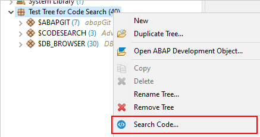

Searching Source-Based ABAP Development
Objects
The Code Search currently supports the following Object types to be
searched:
- Classes
- Interfaces
- Programs
- Type Groups
- Function Groups
- Data Definitions
- Metadata Extensions
- Access Controls
- Behavior Definitions
- Simple Transformations
Starting a Blank Search
To start a Code Search, you first have to open the Eclipse Search
Dialog. This can be done in a view different ways
- via shortcut
STRG + H
- via the Eclipse main menu bar: Search ➠ Search...
If the Code Search Page is not yet visible in the dialog you may have
to enable it via the button Customize in the lower left
corner of the dialog.
Enable Code Search Page in Search Dialog
Starting a Search with prefilled Scope
There is also the option to open the Code Search Dialog via the
Context Menu of several locations in Eclipse:
- via selected object(s) in the Project Explorer
- via selected Repository Tree in the Project Explorer

Code Search on Repository Tree
- via selected type folder in the Project Explorer
 Code Search on type folder in Project
Explorer
Code Search on type folder in Project
Explorer
- via selected object from the Where-Used-List Result
- via selected object from the ABAP Object Search Result
- via selected object from the ABAP Object Search (DevEpos)
Result 1
- via selected object from the ABAP CDS Analyzer View 1
- via selected object from the ABAP Tagged Object Search
(DevEpos) Result 2
Related Information